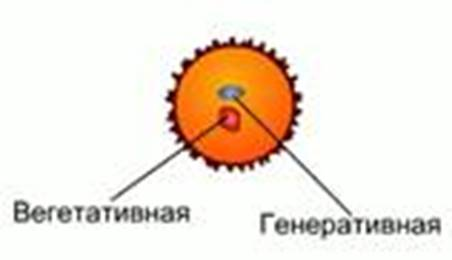
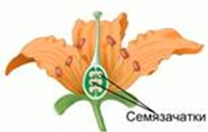
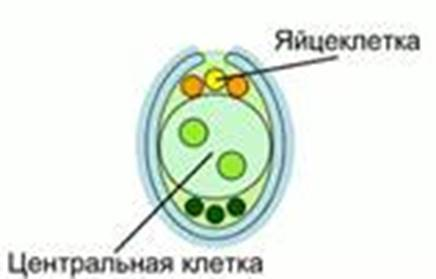
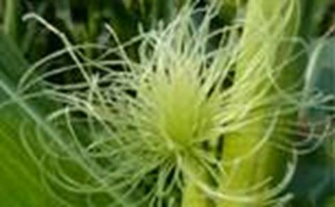
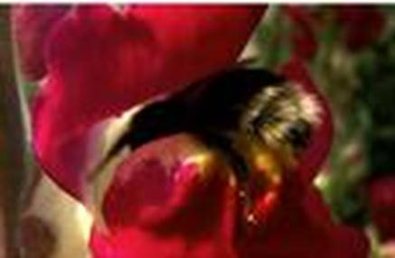
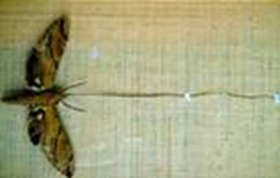

Общие сведения
Основное отличие покрытосеменных от голосеменных – наличие цветка и завязи. Цветок привлекает опылителей, завязь защищает формирующееся семя.
Цветок – видоизмененный побег, несущий чашелистики, лепестки, тычинки, пестики.
Развитие пыльцы
В пыльниках тычинок происходит деление. В результате образуются многочисленные клетки, которые созревают в пыльцу. Пыльцевые зерна – производные спор. Они покрыты двухслойной оболочкой. Наружная оболочка неровная, с выростами, которые помогают пыльцевым зернам удерживаться на рыльце пестика. Под оболочкой расположены вегетативная и генеративная клетки (см. Рис. 1). Это мужской гаметофит покрытосеменных.

Рис. 1. Клетки пыльцы
Развитие семязачатка
Семязачатки (см. Рис. 2) развиваются на внутренней стороне стенок завязи. Их количество зависит от видовой принадлежности растения.

Рис. 2. Семязачатки
В семязачатке образуется зародышевый мешок (см. Рис. 3) – женский гаметофит цветковых растений. Напротив микропиле находится яйцеклетка, а в центре – центральная клетка.

Рис. 3. Зародышевый мешок
Двойное оплодотворение
Пыльцевое зерно попадает на рыльце пестика и прикрепляется к нему, благодаря особенности строения оболочки и липким сахаристым выделениям рыльца.
Пыльцевое зерно набухает и прорастает, образуя пыльцевую трубку – производную вегетативной клетки. Трубка врастает в полость завязи. В пыльцевой трубке генеративная клетка делится на 2 спермия. При проникновении пыльцевой трубки через микропиле в полость зародышевого мешка один из спермиев сливается с яйцеклеткой. Происходит оплодотворение и образуется зигота. Второй спермий сливается с ядром центральной клетки.
Оплодотворение – процесс слияния 2 половых клеток с образованием зиготы.
Этот процесс называется двойным оплодотворением и характерен только для цветковых растений.
Зигота приступает к делению, в результате которого образуется многоклеточный зародыш растения. Центральная клетка делится, образуя эндосперм. Из оболочек семязачатка формируется семенная кожура. К завязи притекают питательные вещества, постепенно она становится спелым плодом. Стенки завязи дают околоплодник, защищающий семена от негативных воздействий. У некоторых растений в образовании плода принимают участие чашелистики и цветоложе.
Опыление
Опыление – процесс переноса пыльцы с пыльника тычинки на рыльце пестика.
Опыление:
· Самоопыление – пыльца из тычинки попадает на рыльце пестика того же самого цветка (рис, пшеница, горох, фасоль). Может происходить еще в бутоне. Не происходит комбинации наследственной информации, поэтому разнообразие потомства мало.
· Перекрестное опыление – пыльца от тычинки одного цветка переносится на рыльце пестика другого цветка (кукуруза, огурец, арбуз, тополь, ива). Высокое разнообразие потомства. Но мала вероятность попадания пыльцы на рыльце пестика. У таких растений выработаны приспособления против самоопыления: пестики и тычинки созревают в разное время, тычинки короче пестиков (гетеростилия) (см. Рис. 4), некоторые растения двудомны.

Рис. 4. Пестики кукурузы
Для некоторых растений (орхидеи) характерно смешанное опыление.
Распространение пыльцы
Зоофилия – опыление растения животными. Цветки или соцветия крупные, яркие, заметные для опыления. Могут иметь метки в ультрафиолетовом спектре, который виден насекомым. В наличии нектар и сильный аромат (табак душистый). Пыльцевые зерна крупные, пыльца липкая, поэтому приклеивается к насекомым (см. Рис. 5), перьям птиц, шерсти млекопитающих.

Рис. 5. Пыльца на пчеле медоносной
Есть цветки, которые опыляются только одним видом животных, так, львиный зев и клевер опыляются шмелями (см. Рис. 6).

Рис. 6. Львиный зев
Кигелия опыляется только летучими мышами. Орхидея ангрекум полуторафутовый опыляется только бражником предсказанным (см. Рис. 7).

Рис. 7. Бражник предсказанный
Анемофилия – опыление растений ветром (тополь, ольха, дуб, орешника, рожь). Цветки мелкие, невзрачные. Пыльца мелкая, легкая, сухая. Пыльники расположены на длинных свисающих нитях. Растения растут большим скоплениями (орешник (см. Рис. 8)).

Рис. 8. Цветки орешника
Деревья цветут весной, до распускания листьев.
Некоторые растения могут опыляться обоими способами: насекомыми и ветром (подорожник).
Искусственное опыление – опыление, производимое человеком. Происходит с целью гибридизации, получения новых сортов, повышения урожайности культур.
Искусственное опыление
Пыльцу переносят мягкой сухой кисточкой или кусочком резины, надетым на проволоку. Цветки некоторых самоопыляемых растений готовят заранее. Для этого бутон открывают и удаляют тычинки. На некоторые бутоны надевают специальные колпачки. Это предупреждает случайное опыление. При распускании цветков на рыльца пестиков наносят заранее заготовленную пыльцу.
Список литературы
1. Биология. Бактерии, грибы, растения. 6 кл.: учеб. для общеобразоват. учреждений / В.В. Пасечник. – 14-е изд., стереотип. – М.: Дрофа, 2011. – 304 с.: ил.
2. Тихонова Е.Т., Романова Н.И. Биология, 6. – М.: Русское слово.
3. Исаева Т.А., Романова Н.И. Биология, 6. – М.: Русское слово.
Дополнительные рекомендованные ссылки на ресурсы сети Интернет
1. Betonolog.ru (Источник).
2. Activestudy.info (Источник).
3. Lotoskay.ucoz.ru (Источник).
Домашнее задание
1. Биология. Бактерии, грибы, растения. 6 кл.: учеб. для общеобразоват. учреждений / В.В. Пасечник. – 14-е изд., стереотип. – М.: Дрофа, 2011. – 304 с.: ил. – с. 215, задания и вопрос 7, 9 (Источник).
2. Как устроен семязачаток и пыльцевое зерно?
3. Опишите процесс двойного оплодотворения.
4. * Подумайте, какой тип опыления покрытосеменных возник первым. Какой из типов опыления является наиболее совершенным? Почему?